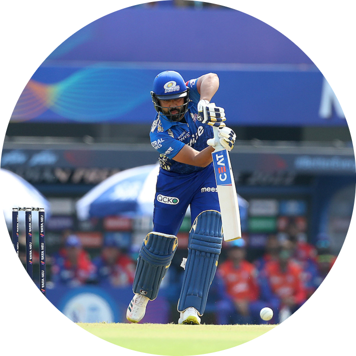
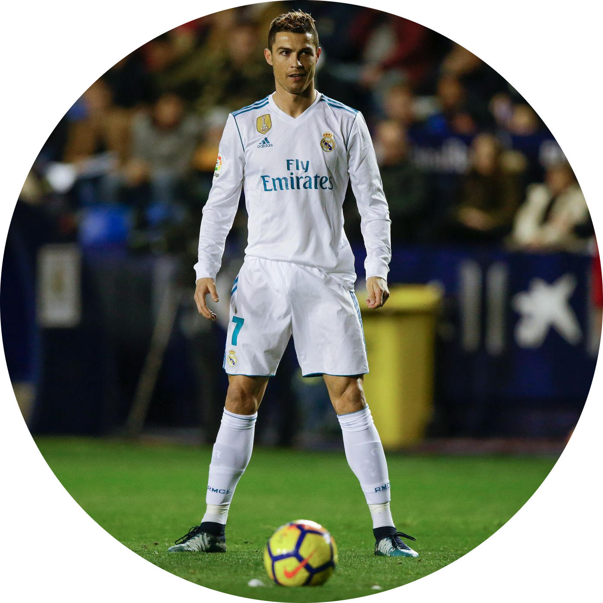
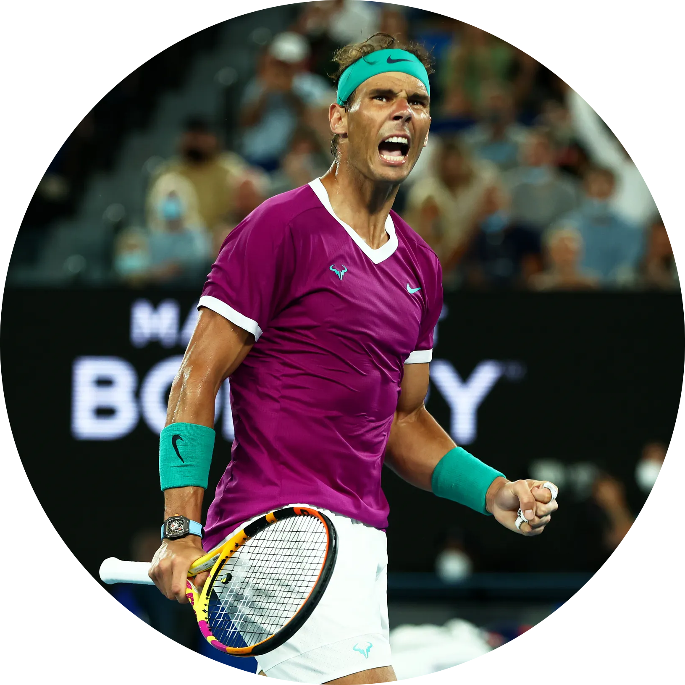

Cricket
Cricket is a bat-and-ball game played between two teams of eleven players each. It is a popular sport in many countries and has various formats such as Test matches, One-Day Internationals (ODIs), and Twenty20 (T20) matches.
My Idol: Rohit Sharma
Rohit Sharma, widely regarded as one of the greatest cricketers of all time, is my cricket idol. His impeccable batting technique, records, and humility have been a tremendous inspiration for me. His passion for the sport and dedication to continuous improvement make him a true legend.

Football
Football, also known as soccer, is a team sport played between two teams of eleven players each. The objective is to score goals by getting the ball into the opposing team's net using any part of the body except the hands and arms.
My Idol: Cristiano Ronaldo
Cristiano Ronaldo, the maestro of football, is my football idol. His incredible dribbling skills, vision on the field, and goal-scoring ability have mesmerized fans around the world. Messi's dedication and sportsmanship both on and off the pitch make him a role model for aspiring footballers like me.
Tennis
Tennis is an individual or doubles racquet sport played on a rectangular court. Players use a racquet to hit the ball over the net into the opponent's court, aiming to win points and games to ultimately win the match.
My Idol: Rafael Nadal
Rafael Nadal, a tennis icon, is my idol in the sport. His powerful serves, unmatched determination, and numerous Grand Slam titles showcase his remarkable talent and resilience.